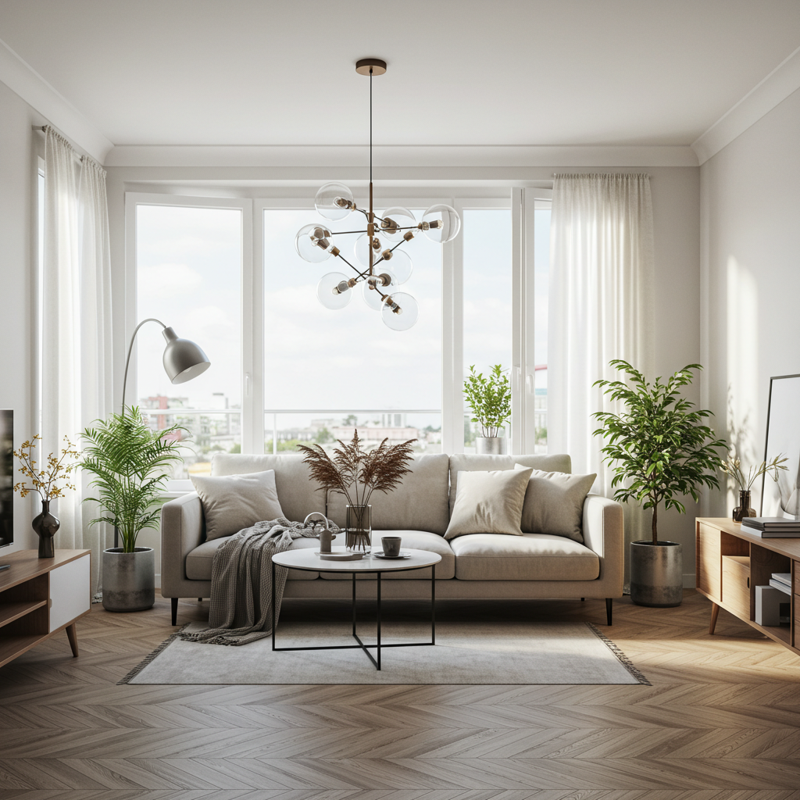
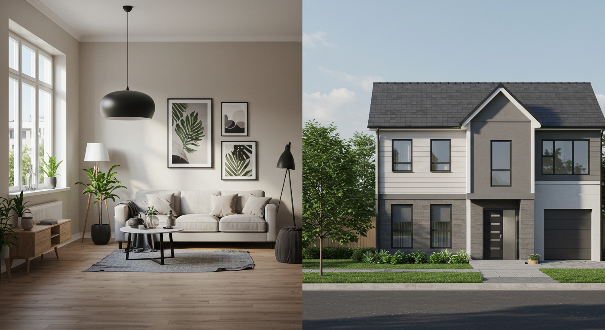
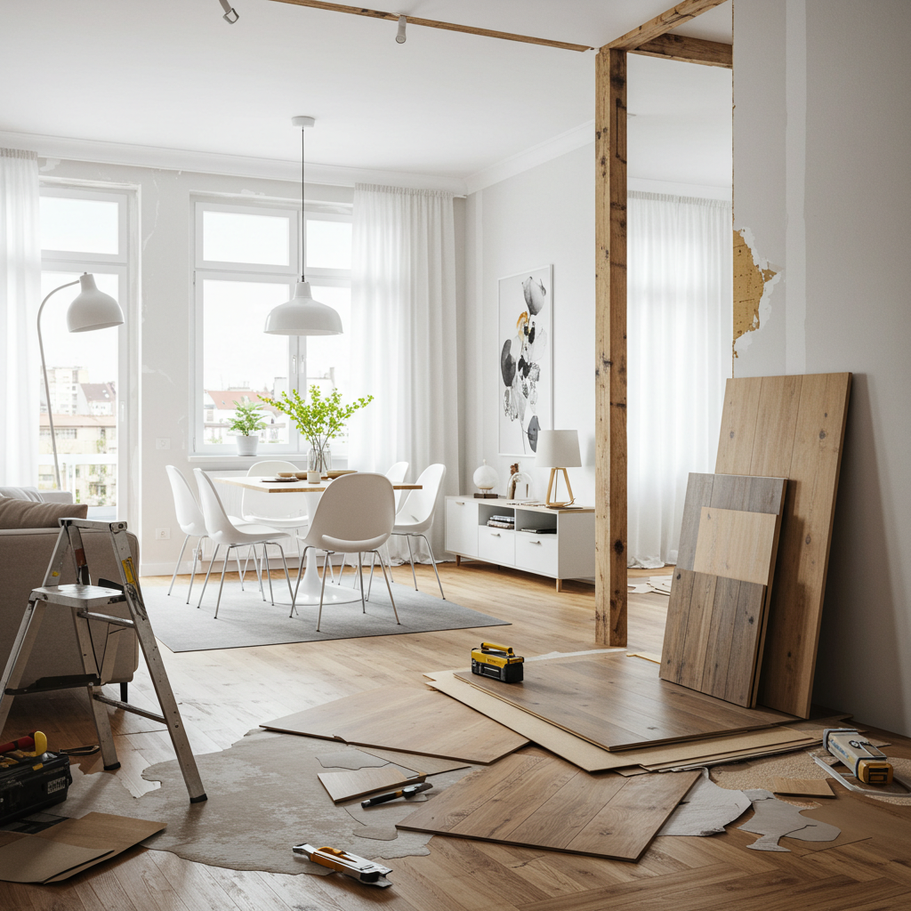
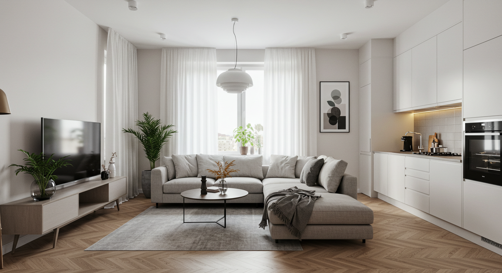
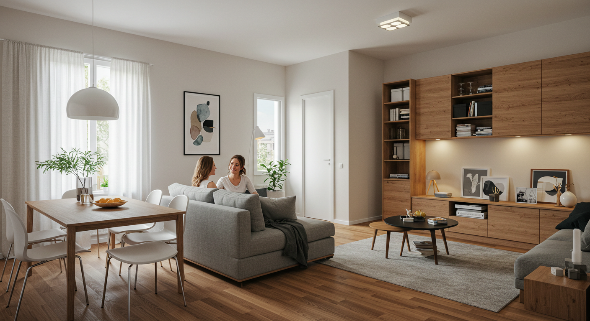
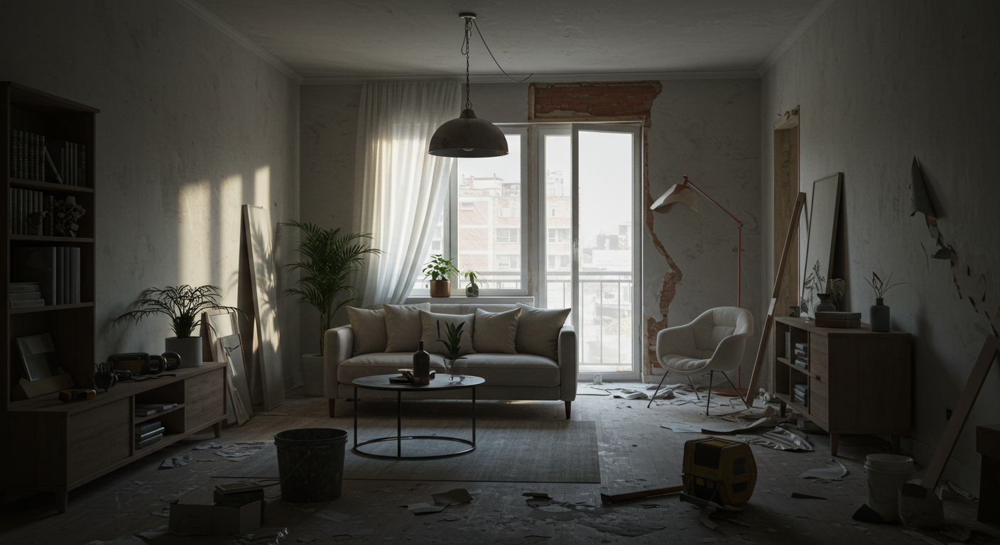
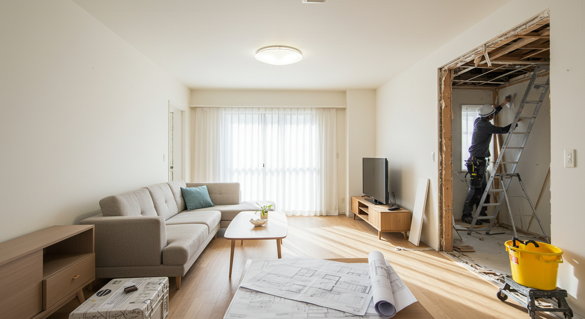
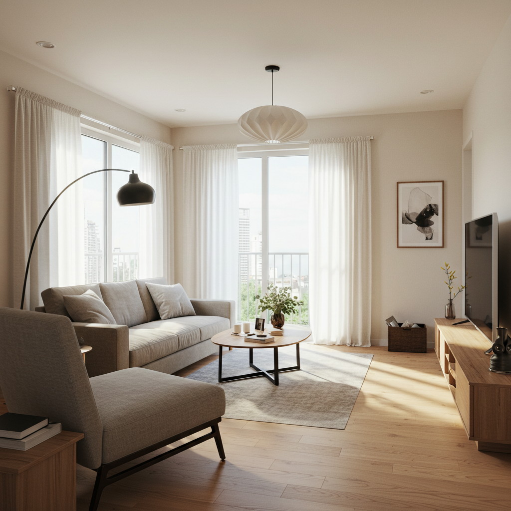

マンションリフォームで理想の住まいを！費用相場から注意点まで徹底解説


長年住み慣れた我が家。愛着はあるけれど、家族の成長やライフスタイルの変化とともに、「もう少しこうだったら良いのに」と感じることはありませんか？例えば、「キッチンが古くて使いづらい」「子供が独立して使わない部屋ができた」「もっと開放的なリビングでくつろぎたい」。そんな風に感じている方もいらっしゃるかもしれません。また、中古マンションを購入して、自分たちの暮らしに合わせた、まったく新しい空間へと生まれ変わらせたい、という夢をお持ちの方もいるでしょう。
そんな想いを叶えるための素敵な選択肢が、「マンションリフォーム」です。
マンションリフォームと聞くと、なんだか大変そう、費用がたくさんかかりそう、手続きが難しそう…といったイメージがあるかもしれません。確かに、計画的に進める必要はありますが、ポイントさえ押さえれば、今の住まいを驚くほど快適で、自分たちらしい、理想の空間へと変えることができるのです。それは、日々の暮らしに彩りを与え、家族の笑顔を増やし、これからの人生をより豊かにしてくれる、価値ある投資とも言えます。
この記事では、これからマンションリフォームをお考えの皆さまが抱える疑問や不安に、一つひとつ丁寧にお答えしていきます。マンションリフォームの基本的な知識から、戸建てとの違い、具体的にどんなことができるのか、気になる費用相場、そしてリフォームを成功させるための業者選びのコツまで、幅広く、そして深く掘り下げて解説します。
専門的な内容も、できるだけ分かりやすく、優しい言葉でご説明しますので、どうぞリラックスしてお読みください。この記事が、皆さまの「理想の住まいづくり」という素敵な旅の、頼れるガイドブックとなれば幸いです。
さあ、一緒に夢の住まいへの第一歩を踏み出しましょう。
マンションリフォームとは？戸建てとの違い

リフォームを考え始めたとき、まず最初に知っておきたいのが「マンションリフォーム」ならではの特徴です。一戸建てのリフォームとは、できることや守るべきルールにいくつかの違いがあります。この違いを理解しておくことが、スムーズで満足のいくリフォーム計画を進めるための、大切な第一歩となります。ここでは、マンションリフォームの基本的な定義から、戸建てとの違い、そして最も重要な「マンション特有の規約」について、ゆっくりと紐解いていきましょう。
マンションリフォームの定義と特徴
マンションリフォームとは、一言でいうと「マンションの自分のお部屋（専有部分）を、より快適で機能的な空間にするための改修工事」のことです。壁紙を張り替えたり、キッチンを新しくしたり、間取りを変更したりと、その内容は多岐にわたります。
この「専有部分」という言葉が、マンションリフォームを理解する上で非常に重要なキーワードになります。マンションは、多くの人が一つの建物に住む「集合住宅」です。そのため、建物全体は「自分一人のものではない」という大前提があります。マンションは、大きく分けて以下の二つの部分から成り立っています。
- 専有部分：その部屋の所有者だけが使用できる、独立した空間のことです。具体的には、リビングや寝室、キッチン、浴室、トイレといったお部屋の内部がこれにあたります。壁紙や床材、室内のドア、作り付けの収納、内部の設備（キッチン、ユニットバスなど）は、基本的に自由にリフォームすることができます。ただし、壁や床の内部にある配管や配線など、建物全体に関わる部分は共用部分扱いになることもありますので注意が必要です。
- 共用部分：マンションの住民全員が共同で使用する部分のことです。例えば、エントランス、廊下、エレベーター、階段、そしてバルコニーやベランダ、玄関ドア（外側）、窓サッシや窓ガラスなどが含まれます。これらの部分は、個人の判断でリフォームしたり、色を変えたりすることはできません。建物の構造を支える柱や梁、壁なども共用部分にあたるため、これらを壊したり、穴を開けたりすることも基本的には不可能です。
つまり、マンションリフォームは、この「専有部分」の範囲内で行う改修工事ということになります。この専有部分と共用部分の明確な区別が、マンションリフォームの最大の特徴であり、計画を立てる上での大原則となるのです。
戸建てリフォームとの主な違い
では、専有部分という制約があるマンションリフォームは、建物全体を自由に改修できる戸建てリフォームと、具体的にどのような点が違うのでしょうか。主な違いを比較しながら見ていきましょう。
| 項目 | マンションリフォーム | 戸建てリフォーム |
|---|---|---|
| 工事の範囲 | 原則として「専有部分」のみ。内装や設備が中心。 | 建物全体が対象。内装、外装（外壁・屋根）、構造、基礎、外構（庭・駐車場）まで可能。 |
| 自由度・制約 | 管理規約による制限が大きい。構造上の制約（水回りの移動など）も多い。 | 建築基準法などの法律を守れば、比較的自由な設計が可能。増築や減築もできる。 |
| 近隣への配慮 | 上下左右の住戸への騒音・振動・臭い対策が非常に重要。工事時間も厳しく制限される。 | 隣接する家への配慮が中心。工事時間は比較的柔軟に対応しやすい。 |
| 費用 | 内装工事が中心のため、同規模なら戸建てより安価な傾向。ただし、資材搬入の費用などがかかる場合も。 | 外壁や屋根など大規模な工事も可能なため、費用は高額になりやすい。足場の設置費用なども必要。 |
| 建物の構造 | ラーメン構造、壁式構造などがあり、構造によって間取り変更の自由度が大きく異なる。 | 木造、鉄骨造、RC造など様々。構造を理解した上でのリフォーム計画が必要。 |
このように見ると、マンションリフォームは戸建てに比べて制約が多いように感じるかもしれません。しかし、見方を変えれば、工事範囲が内装に限定されるため、計画が立てやすく、費用も比較的抑えやすいというメリットもあります。また、外壁や屋根のメンテナンスは管理組合が行ってくれるため、自分で行う必要がないという点も、マンションならではの利点と言えるでしょう。大切なのは、これらの違いをしっかりと理解し、「マンションだからこそできること」に目を向けて、賢く計画を立てることなのです。
マンション特有の規約と制限
さて、マンションリフォームを計画する上で、法律と同じくらい、いえ、それ以上に重要になってくるのが、そのマンション独自のルールである「管理規約」です。これは、マンションの住民が快適で安全な共同生活を送るために定められた約束事の集まりで、リフォームに関する詳細なルールもここに記載されています。
リフォーム会社と打ち合わせを進める前に、まずはご自身のマンションの管理規約を必ず確認しましょう。管理規約は、マンションの管理組合や管理会社に問い合わせれば、入手することができます。具体的に、どのような制限が定められていることが多いのか、代表的な例を見ていきましょう。
- 床材の制限：マンションで最も多いトラブルの一つが「生活音」です。特に、下の階への足音や物を落とした時の音は、大きな問題になりかねません。そのため、多くのマンションでは、床材の遮音性能に厳しい規定を設けています。「遮音等級L-45（またはLL-45）以上の性能を持つ床材を使用すること」といった具体的な数値で定められていることがほとんどです。カーペットからフローリングに変更する場合などは、この規定を必ずクリアする必要があります。
- 電気容量の制限：マンション全体で使える電気の総量には限りがあるため、各住戸で使える電気容量の上限が決められています。IHクッキングヒーターや消費電力の大きいエアコンなど、新しい設備を導入する際には、契約アンペア数を変更できるかどうか、事前に確認が必要です。
- 窓や玄関ドアの交換：先ほども触れましたが、窓サッシや玄関ドアは共用部分とされているため、個人で勝手に交換することはできません。ただし、断熱性や防音性を高めるために、既存の窓の内側にもう一つ窓を設置する「内窓（二重窓）」の取り付けは、専有部分の工事として認められている場合が多いです。
- 水回り設備の移動制限：キッチンや浴室、トイレなどの水回りを大幅に移動させるリフォームは、配管の問題で難しいケースがほとんどです。特に、排水管はスムーズに水を流すために一定の勾配（傾き）が必要ですが、床下のスペースには限りがあるため、移動できる範囲が限られてしまうのです。また、PS（パイプスペース）と呼ばれる、マンション全体の配管が通っている縦穴の位置は動かせません。
- 工事可能な曜日・時間の指定：住民の平穏な生活を守るため、「工事は平日の午前9時から午後5時まで」「土日祝日は音の出る作業は禁止」など、工事を行える曜日や時間が細かく定められています。
- 管理組合への届け出・承認義務：リフォーム工事を行う前には、工事内容を記した申請書や図面などを管理組合に提出し、承認を得る必要があります。この手続きを怠ると、工事の中止を求められたり、トラブルの原因になったりします。
これらの規約は、一見すると面倒に感じるかもしれませんが、建物の安全性を守り、住民同士が気持ちよく暮らしていくためには不可欠なルールです。計画の初期段階でこれらの制限を把握しておくことで、「せっかくプランを練ったのに、規約違反で実現できなかった」という悲しい事態を避けることができます。信頼できるリフォーム会社は、こうした規約の確認や申請手続きのサポートも行ってくれますので、安心して相談してみてくださいね。
マンションリフォームでできること！工事の種類と範囲

マンション特有のルールを理解したところで、次はいよいよ「具体的にどんなリフォームができるのか」を見ていきましょう。制約があるとはいえ、専有部分の中では驚くほど多彩で自由な空間づくりが可能です。ここでは、代表的なリフォーム工事の種類を、場所や目的ごとに分かりやすくご紹介します。ご自身の希望や夢と照らし合わせながら、理想の住まいのイメージを膨らませてみてください。
水回り設備の交換・改修
キッチン、浴室、トイレ、洗面所といった「水回り」は、毎日使う場所だからこそ、老朽化や使い勝手の悪さが気になりやすいポイントです。水回り設備を一新するだけで、日々の家事の負担が軽くなったり、心からリラックスできる時間が増えたりと、暮らしの質は格段に向上します。
- キッチンリフォーム
暮らしの中心ともいえるキッチン。リフォームによって、料理がもっと楽しく、効率的になります。- システムキッチンの交換：古くなったキッチンを、収納力や機能性に優れた最新のシステムキッチンに交換するのが最も一般的なリフォームです。食洗機をビルトインしたり、お手入れが簡単なIHクッキングヒーターを導入したり、汚れがつきにくいレンジフードにしたりと、様々なオプションを選ぶことができます。
- レイアウトの変更：壁に向かって調理する「壁付けキッチン」から、家族と会話しながら作業できる「対面式キッチン（カウンターキッチンやアイランドキッチン）」への変更も人気です。ただし、排気ダクトの位置や配管の制約があるため、どこまで可能か専門家との相談が必要です。
- 周辺の改修：キッチンの交換に合わせて、カップボード（食器棚）を設置して収納を増やしたり、パントリー（食品庫）スペースを設けたりすることもできます。
- 【費用相場：約50万円～150万円】
- 浴室リフォーム
一日の疲れを癒やす大切な空間。清潔で快適なバスルームは、心と体の健康にも繋がります。- ユニットバスの交換：在来工法の浴室からユニットバスへ、または古いユニットバスから新しいものへと交換します。最新のユニットバスは、断熱性が高くお湯が冷めにくかったり、床が乾きやすくカビが生えにくかったりと、機能性が飛躍的に向上しています。
- 機能の追加：雨の日や花粉の季節に便利な浴室換気乾燥機の設置、半身浴も楽しめる追い焚き機能の追加、テレビの設置など、バスタイムを豊かにする機能を追加できます。
- バリアフリー化：将来を見据えて、浴槽のまたぎを低くしたり、手すりを設置したり、滑りにくい床材を選んだり、出入り口の段差を解消したりといったバリアフリー対応も重要です。
- 【費用相場：約50万円～150万円】
- トイレリフォーム
狭い空間ながら、リフォームによる満足度が非常に高いのがトイレです。- 便器の交換：少ない水でパワフルに洗浄できる最新の節水型トイレに交換すれば、水道代の節約に繋がります。タンクのない「タンクレストイレ」は、空間がすっきりして広く見える効果もあります。
- 内装の一新：便器の交換と同時に、壁紙（クロス）や床のクッションフロアを張り替えるだけで、暗い印象だったトイレが明るく清潔な空間に生まれ変わります。消臭効果や防カビ効果のある機能性壁紙もおすすめです。
- 機能性の向上：独立した手洗い器を新設したり、収納キャビネットを取り付けて掃除用具などをすっきり片付けたりすることもできます。
- 【費用相場：約20万円～50万円】
- 洗面所リフォーム
朝の身支度から夜のケアまで、家族みんなが使う洗面所。収納力と清掃性がポイントです。- 洗面化粧台の交換：収納が豊富な三面鏡タイプや、ボウルが広くて掃除がしやすいタイプ、スタイリッシュなベッセルタイプなど、様々なデザインから選べます。ホースを引き出して使えるシャワー水栓も便利です。
- 周辺の改修：洗面化粧台の横に、タオルや洗剤をストックできるトールキャビネットを設置したり、洗濯機上のデッドスペースに吊戸棚を設けたりと、収納力をアップさせる工夫が可能です。
- 【費用相場：約15万円～50万円】
リビング・居室の空間デザイン変更
お部屋の大部分を占める壁、床、天井。これらの内装を変えるだけで、空間の雰囲気は劇的に変わります。まるで新築のように生まれ変わらせたり、自分の好きなテイストのインテリアに合わせたりと、デザインの可能性は無限大です。
- 壁紙（クロス）の張り替え
最も手軽に、そして効果的にお部屋の印象を変えられるリフォームです。- 色や柄で遊ぶ：部屋全体を明るい白で統一して広く見せたり、一面だけアクセントクロスとして大胆な色や柄物を取り入れたりするだけで、お部屋がぐっとおしゃれになります。
- 機能性壁紙を選ぶ：デザインだけでなく、機能で選ぶという視点も大切です。ペットの臭いやタバコの臭いを分解する「消臭タイプ」、湿気をコントロールして結露やカビを防ぐ「調湿タイプ」、汚れが拭き取りやすい「フィルム汚れ防止タイプ」、猫の爪とぎにも強い「スーパー耐久性タイプ」など、お部屋の悩みや用途に合わせて選べます。
- 【費用相場：1㎡あたり約1,000円～2,000円】
- 床材の変更
床は、肌が直接触れる部分でもあり、空間の印象を大きく左右します。マンションの遮音規定を守りながら、最適な床材を選びましょう。- フローリング：木の温もりを感じられる人気の床材。遮音性能を備えたマンション用のフローリングが主流です。色味や木目の種類によって、ナチュラル、モダン、ヴィンテージなど様々なテイストを演出できます。
- カーペット：保温性や吸音性に優れ、足触りが柔らかいのが特徴です。小さなお子様や高齢の方がいるご家庭でも安心感があります。
- クッションフロア：水に強く、汚れも拭き取りやすいため、トイレや洗面所、キッチンなどの水回りでよく使われます。デザインも豊富で、比較的安価なのも魅力です。
- フロアタイル：塩化ビニル製のタイル状の床材。石目調や木目調などリアルな質感が特徴で、耐久性が高く土足もOKなものもあるため、玄関などにも使われます。
- 【費用相場（フローリング張り替え）：1畳あたり約1.5万円～3万円】
- 照明計画の見直し
照明は単に部屋を明るくするだけでなく、空間に奥行きやムードを生み出す重要な要素です。- 多灯分散：部屋の真ん中にシーリングライトが一つだけ、という照明から、ダウンライトやスポットライト、間接照明などを組み合わせる「多灯分散」に変えることで、空間にメリハリが生まれ、洗練された雰囲気になります。
- 調光・調色機能：時間帯や気分に合わせて、光の明るさ（調光）や色味（調色）を変えられる照明器具を導入すれば、食事の時間は温かみのある電球色、勉強や作業の時間は集中しやすい昼白色、と生活シーンに合わせた最適な光環境をつくることができます。
- 収納の増設・改善
「収納が足りない」「物が片付かない」という悩みは、リフォームで解決できます。- クローゼットの設置・拡張：押入れを使いやすいクローゼットに変更したり、部屋の一角にウォークインクローゼットを新設したり。
- 壁面収納：リビングの壁一面に、テレビボードと本棚、飾り棚などを一体化させたシステム収納を設置すれば、収納力が大幅にアップし、見た目もすっきりします。
- ニッチ（壁龕）の造作：壁の厚みを利用して、飾り棚やスイッチ類をまとめるための小さなくぼみ（ニッチ）を作るのもおしゃれです。
断熱性・防音性を高めるリフォーム
マンション暮らしでよく聞かれる悩みが、「冬の寒さや夏の暑さ」「窓の結露」、そして「隣戸や上下階からの生活音」です。これらの性能を向上させるリフォームを行うことで、一年中快適に過ごせるだけでなく、光熱費の削減や近隣トラブルの予防にも繋がり、住まいの満足度を大きく高めることができます。
- 断熱リフォーム
外の暑さ・寒さの影響を受けにくくし、快適な室温を保つための工事です。- 内窓（二重窓）の設置：既存の窓の内側にもう一つ窓を取り付ける、最も手軽で効果的な断熱リフォームです。窓と窓の間に空気の層ができることで、熱の出入りを大幅にカットします。断熱効果だけでなく、結露の防止や、外からの騒音を軽減する防音効果も期待できます。国の補助金制度の対象になることも多いので、ぜひチェックしてみてください。
- 壁・床・天井への断熱材の追加：より本格的な断熱対策として、専有部分の内側から壁や床、天井に断熱材を充填する方法があります。これは壁紙や床材を一度剥がす必要があるため、内装リフォームと同時に行うのが効率的です。特に、外気に接している壁（外壁側の壁）や、最上階の天井、一階の床などに行うと効果が高まります。
- 防音リフォーム
自分たちの出す音が外に漏れるのを防いだり、外からの音の侵入を軽減したりするための工事です。- 床の対策：子供の足音など、下の階への音漏れ（重量衝撃音）が気になる場合は、遮音性能の高いフローリング材を選んだり、下地に防音マットを敷いたりする方法があります。
- 壁・天井の対策：隣の部屋からの話し声やテレビの音（軽量衝撃音）が気になる場合は、壁の内側に遮音シートや吸音材を入れる工事が有効です。
- 窓の対策：道路の騒音など、外からの音が気になる場合は、前述の内窓の設置が非常に効果的です。気密性が高まることで、音の侵入を大幅に防ぐことができます。
- 音の問題は非常にデリケートなため、ピアノなどの楽器を演奏したい場合は、専門的な知識を持つ業者に相談し、しっかりとした防音室を計画することをおすすめします。
間取り変更を伴う大規模リフォーム
「リノベーション」とも呼ばれる、間取りそのものを変えてしまう大規模なリフォーム。家族構成やライフスタイルの変化に合わせて、住まいの形を大胆に変えることができます。
- 具体的な間取り変更の例
- LDKの拡張：リビングの隣にあった和室や洋室の壁を取り払い、一つの広々としたリビング・ダイニング・キッチン（LDK）に。家族が集まる開放的な空間が生まれます。
- 和室から洋室への変更：畳の部屋をフローリングにし、押入れをクローゼットに変えることで、現代のライフスタイルに合った使いやすい洋室になります。
- 子供部屋の確保：広い一部屋を壁で仕切り、二人の子供のためにそれぞれの個室を作る。逆にお子様が独立した後は、二つの子供部屋を繋げて趣味の部屋にする、といったことも可能です。
- ワークスペースの新設：在宅勤務の普及に伴い、リビングの一角にカウンターを設けたり、納戸を書斎に改造したりと、集中できるワークスペースを確保するリフォームも増えています。
- 間取り変更の注意点
夢が広がる間取り変更ですが、マンションの構造によっては、壊せない壁が存在します。マンションの主な構造には「ラーメン構造」と「壁式構造」の二種類があります。- ラーメン構造：柱と梁で建物を支える構造です。室内に柱や梁の出っ張りがあるのが特徴で、比較的築年数の浅いマンションに多く見られます。この構造の場合、部屋を仕切っている壁の多くは構造に関係ない「間仕切り壁」なので、比較的自由に撤去したり、移動させたりすることが可能です。
- 壁式構造：柱や梁の代わりに、鉄筋コンクリートの「壁」で建物を支える構造です。室内に柱や梁の出っ張りがなく、すっきりしているのが特徴で、5階建て以下の中低層マンションに多く見られます。この構造の場合、部屋を仕切っている壁そのものが建物を支える「構造壁（耐力壁）」であることが多く、この壁は絶対に撤去することができません。
ご自身のマンションがどちらの構造なのかは、図面を見たり、リフォーム会社に現地調査をしてもらったりすることで確認できます。間取り変更を考える際は、この構造の壁の制約を理解した上で、実現可能なプランを練っていくことが大切です。
マンションリフォームの費用相場と内訳

リフォームを考える上で、最も気になるのが「費用」のことではないでしょうか。「一体いくらかかるのだろう？」という不安は、誰もが抱くものです。ここでは、リフォームにかかる費用の相場を、工事の箇所別、そして全体リフォームの場合に分けて、具体的に見ていきます。また、賢く費用を抑えるためのコツもご紹介しますので、ぜひ予算計画の参考にしてくださいね。
箇所別リフォームの費用相場
まずは、キッチンや浴室など、特定の場所だけをリフォームする場合の費用相場です。費用は、選ぶ設備のグレード（ベーシック、ミドル、ハイグレード）や、工事の範囲（内装工事も含むかなど）によって大きく変動します。あくまで一般的な目安としてご覧ください。
| リフォーム箇所 | 費用相場 | 主な工事内容と費用のポイント |
|---|---|---|
| キッチン | 50万円～150万円 | システムキッチンの本体価格が費用を大きく左右します。ベーシックなI型キッチンなら50万円前後から可能ですが、対面式への変更や、ハイグレードな設備（海外製食洗機、高機能レンジフードなど）を選ぶと150万円以上になることもあります。 |
| 浴室 | 50万円～150万円 | ユニットバスの交換が中心です。本体のグレードに加え、浴室乾燥機、ミストサウナ、肩湯などのオプション機能を追加すると費用が上がります。在来工法の浴室からのリフォームは、解体や防水工事などで費用が高くなる傾向があります。 |
| トイレ | 20万円～50万円 | 便器本体の価格と、内装工事の有無で変わります。シンプルな機能の組み合わせトイレなら20万円程度から。タンクレストイレや、手洗い器の新設、壁紙・床の全面張り替えを行うと40万～50万円程度になることが多いです。 |
| 洗面所 | 15万円～50万円 | 洗面化粧台の交換がメインです。本体のサイズや収納力、デザインによって価格が異なります。壁紙や床の張り替え、収納棚の追加などを行うと、費用は上がります。 |
| リビング（内装） | 30万円～100万円 | 12畳程度のリビングを想定した場合の費用です。壁紙とフローリングの張り替えが主な工事で、選ぶ材料のグレードによって費用が変わります。アクセントクロスや間接照明、壁面収納などを加えると、費用は高くなります。 |
| 和室から洋室へ | 25万円～80万円 | 6畳の和室を想定した場合です。畳をフローリングに、襖をドアに、押入れをクローゼットに変更するのが一般的な工事です。床の間の解体や、壁の造作が必要になると費用が上がります。 |
| 内窓設置 | 1箇所 5万円～15万円 | 窓のサイズや、ガラスの種類（ペアガラス、Low-E複層ガラスなど）によって費用が変わります。断熱や防音対策として非常にコストパフォーマンスの高いリフォームです。 |
これらの箇所別リフォームを複数同時に行うことで、職人さんの手配や資材の搬入などを効率化でき、結果的にトータルの費用を少し抑えられる場合もあります。
全体リフォームの費用相場
次に、間取り変更を含め、住戸全体を全面的にリフォームする「フルリフォーム」や「リノベーション」の場合の費用相場です。これは工事の規模が大きくなるため、費用も高額になります。一般的に、「1㎡あたり10万円～20万円」が目安とされています。
この単価を基に、マンションの広さ別の費用相場を算出すると、以下のようになります。
- 50㎡（1LDK～2DK程度）の場合：500万円～1,000万円
- 70㎡（2LDK～3LDK程度）の場合：700万円～1,400万円
- 90㎡（3LDK～4LDK程度）の場合：900万円～1,800万円
もちろん、これはあくまで目安であり、実際の費用は様々な要因によって変動します。
- 設備のグレード：キッチンやユニットバスなどの設備を、どのグレードにするかで数百万円単位の差が出ます。
- 間取り変更の規模：壁の撤去や新設が多いほど、解体費用や大工工事費、電気工事費などがかさみます。
- 内装材の質：無垢材のフローリングや珪藻土の壁など、自然素材や高価な建材を使用すると費用は上がります。
- 建物の状態：築年数が古いマンションの場合、解体してみたら下地や配管が予想以上に傷んでいて、補修や交換に追加費用がかかることがあります。
- デザインへのこだわり：造作家具や特殊な照明計画など、デザイン性を追求すると、その分設計料や工事費が増加します。
フルリフォームを検討する際は、まず自分たちがどこにお金をかけたいのか、優先順位をしっかりと決めておくことが、予算内で満足のいくリフォームを実現するための鍵となります。
リフォーム費用を安く抑えるコツ
「理想はたくさんあるけれど、予算には限りがある…」というのは、誰もが同じです。少しでも賢く、お得にリフォームを実現するために、費用を抑えるためのいくつかのコツをご紹介します。
- 設備のグレードにメリハリをつける
すべての設備を最高級グレードにする必要はありません。「キッチンは毎日使うからこだわりたいけど、トイレは標準的な機能で十分」というように、自分たちのライフスタイルに合わせて、お金をかける部分（こだわりポイント）と、コストを抑える部分（標準仕様でOKなポイント）にメリハリをつけましょう。 - 補助金・助成金制度を活用する
国や自治体では、リフォームに関する様々な補助金・助成金制度を用意しています。代表的なものに、省エネ性能を高めるリフォーム（内窓設置や高断熱浴槽の導入など）や、バリアフリー化リフォーム（手すりの設置や段差解消など）に対する補助金があります。利用できる制度がないか、リフォーム会社の担当者に相談したり、お住まいの自治体のホームページを確認したりしてみましょう。 - リフォーム減税を利用する
特定の条件を満たすリフォーム工事を行った場合、所得税が控除されたり、固定資産税が減額されたりする「リフォーム減税」という制度があります。耐震、バリアフリー、省エネ、同居対応、長期優良住宅化リフォームなどが対象となります。こちらも適用条件が細かく定められているため、専門家であるリフォーム会社に確認することをおすすめします。 - 複数の業者から相見積もりを取る
これは費用を抑える上で最も重要かつ効果的な方法です。同じ工事内容でも、会社によって見積もり金額は異なります。2～3社から見積もりを取ることで、その工事の適正価格を把握することができますし、価格交渉の材料にもなります。ただし、単に一番安い業者を選ぶのではなく、工事内容や担当者の対応なども含めて、総合的に判断することが大切です。 - シンプルなデザイン・間取りにする
凝ったデザインや複雑な間取りは、その分、職人さんの手間（工数）がかかるため、工事費が高くなります。壁の凹凸を少なくしたり、造作家具を減らして既製品をうまく活用したりと、できるだけシンプルな設計にすることでコストを抑えることができます。 - 既存のものを活かす
まだ十分に使える建具（ドアなど）や設備は、無理にすべてを新しくするのではなく、クリーニングや補修をして再利用するという選択肢もあります。すべてを一新するよりも、コストを大幅に削減できます。 - 工事の時期を調整する
リフォーム業界にも繁忙期（2～3月の年度末や、年末）があります。こうした時期を避けて、比較的工事が少ない時期（梅雨時や夏場など）に依頼すると、業者によっては価格交渉に柔軟に応じてくれる可能性があります。
これらのコツをうまく活用しながら、無理のない予算計画を立て、満足のいくリフォームを実現してくださいね。
マンションリフォームのメリット

費用や手間をかけてリフォームをすることで、私たちの暮らしにはどのような素晴らしい変化がもたらされるのでしょうか。リフォームは、単に古くなったものを新しくするだけではありません。家族の今、そして未来の暮らしを、より快適で、安全で、豊かなものへと変えてくれる、たくさんのメリットがあります。ここでは、その代表的な3つのメリットについて、詳しくご紹介します。
メリット１．快適で安全な住まいを実現
長年暮らしていると、知らず知らずのうちに「ちょっとした不便」に慣れてしまっていることがあります。リフォームは、そうした日々の小さなストレスを解消し、格段に快適で安全な毎日をもたらしてくれます。
- 家事の効率化で、時間にゆとりが生まれる
例えば、最新のシステムキッチン。収納が豊富で調理器具の出し入れがスムーズになったり、食洗機が面倒な皿洗いを代行してくれたり、掃除のしやすいレンジフードがお手入れの手間を省いてくれたり。こうした小さな変化の積み重ねが、家事全体の時間を短縮し、家族と過ごす時間や自分のための時間を生み出してくれます。浴室やトイレも同様に、最新の設備は清掃性が格段に向上しており、日々の掃除がぐっと楽になります。 - 一年中、心地よい室温で過ごせる
断熱リフォームによって、外の厳しい暑さや寒さの影響を受けにくくなります。「冬の朝、リビングがひんやりして起きるのが辛い」「夏の夜、エアコンが切れるとすぐに暑くて目が覚める」といった悩みが解消され、一年を通して快適な室温を保ちやすくなります。これは、体への負担を減らすだけでなく、冷暖房費の削減、つまり光熱費の節約にも直結する、嬉しいメリットです。 - ヒートショックや転倒のリスクを減らし、安全に暮らせる
特に冬場に心配なのが、暖かいリビングから寒い浴室やトイレへ移動した際に起こる「ヒートショック」です。これは急激な温度変化によって血圧が大きく変動し、心筋梗塞や脳梗塞を引き起こす危険な現象です。浴室暖房乾燥機を設置したり、住まい全体の断熱性を高めたりすることで、部屋ごとの温度差を少なくし、ヒートショックのリスクを大幅に軽減できます。
また、室内の段差をなくしたり、廊下やトイレ、浴室に手すりを設置したりするバリアフリーリフォームは、高齢の方だけでなく、小さなお子様や妊娠中の方にとっても、転倒を防ぐための重要な安全対策となります。 - すっきり片付いた空間で、心穏やかに過ごせる
収納が少ないと、どうしても物がお部屋にあふれてしまい、散らかった印象になりがちです。リフォームで、家族の持ち物の量やライフスタイルに合わせた収納計画を立てることで、「物の定位置」が決まり、探し物をする時間も減ります。すっきりと片付いた空間は、見た目が美しいだけでなく、心にもゆとりと落ち着きをもたらしてくれます。
メリット２．セカンドライフに合わせた生活動線
私たちの暮らしは、結婚、出産、子育て、子供の独立、そしてセカンドライフと、時間とともに変化していきます。住まいの形を、その時々のライフステージに合わせて最適化できるのも、リフォームの大きな魅力です。
- 子育て世代の暮らしをサポート
子供が小さいうちは、キッチンからリビングで遊ぶ様子が見守れる対面キッチンが安心です。子供が成長し、自分の部屋を持つようになったら、リビングの一角に勉強用のカウンタースペースを設ける「リビング学習」の空間を作ることもできます。子供の成長に合わせて、間取りを柔軟に変えていけるのは、リフォームならではの利点です。 - 夫婦二人のセカンドライフを豊かに
子供が独立し、夫婦二人の生活が始まると、これまで子供部屋だった空間の使い方も変わってきます。例えば、二つの子供部屋の壁を取り払って、広々とした趣味の部屋やアトリエに作り変える。あるいは、使わなくなった部屋を大きなウォークインクローゼットにして、夫婦の寝室をすっきりとさせる。これからの人生を、夫婦二人でより楽しく、快適に過ごすための空間づくりが可能になります。 - 将来の介護を見据えた住まいづくり
今は元気でも、誰もがいつかは年齢を重ねます。将来、車椅子での生活になったり、介護が必要になったりすることを見据えて、早めにリフォームをしておくという考え方もあります。廊下の幅を広げたり、引き戸を採用したり、トイレや浴室のスペースを拡張したりといったリフォームは、元気なうちはもちろん、いざという時にも安心して暮らし続けられる住まいへと繋がります。 - 多様化する働き方への対応
近年、在宅ワーク（テレワーク）が急速に普及しました。リフォームによって、リビングの一角や納戸などを活用し、仕事に集中できる快適なワークスペースを確保することもできます。オンライン会議で背景が気にならないよう壁紙を工夫したり、必要な電源やLAN配線をすっきりと整備したりと、働き方に合わせた住環境を整えることができます。
このように、リフォームは「今の暮らし」を快適にするだけでなく、「これからの暮らし」の変化にも柔軟に対応できる、未来への投資でもあるのです。
メリット３．住まいの資産価値維持・向上
住まいは、暮らしの場であると同時に、大切な「資産」でもあります。リフォームは、この資産としての価値を維持し、さらには向上させる効果も期待できます。
- 見た目の印象アップが価値に繋がる
将来、そのマンションを売却したり、賃貸に出したりする可能性を考えたとき、内装や設備の状況は、買い手や借り手にとって非常に重要な判断材料となります。特に、キッチンや浴室といった水回りが古く、汚れていると、それだけで敬遠されてしまうことも少なくありません。リフォームによって内装や設備をきれいに一新しておくことは、物件の第一印象を良くし、「住みたい」と思わせる魅力に繋がります。結果として、スムーズな売却や、相場より高い賃料設定に結びつく可能性があります。 - 住宅性能の向上が付加価値となる
単に見た目をきれいにするだけでなく、断熱性能や防音性能、耐震性能（マンションの場合は専有部分でできる範囲）などを向上させるリフォームは、住まいの「付加価値」を高めることに直結します。例えば、「この家は断熱性が高いので光熱費が安く済みます」「二重窓なので大通り沿いでも静かです」といったアピールは、他の物件との大きな差別化ポイントになります。目に見えない部分の性能を高めることは、長期的な視点で見たときに、資産価値を大きく左右する要素となるのです。 - 適切なメンテナンスによる価値の維持
建物や設備は、年月の経過とともに必ず劣化していきます。何もせずに放置すれば、その価値は下がる一方です。定期的に適切なリフォーム（メンテナンス）を行うことは、急激な資産価値の下落を防ぎ、建物を良好な状態に保つために不可欠です。
ただし、注意しておきたいのは、「リフォームにかかった費用が、そのまま売却価格に上乗せされるわけではない」ということです。リフォームはあくまで、資産価値を「維持・向上」させるための投資と捉えるのが良いでしょう。奇抜すぎるデザインや、個人的な趣味に偏りすぎたリフォームは、かえって買い手を狭めてしまう可能性もあるため、将来的な売却などを視野に入れる場合は、多くの人に受け入れられやすい、シンプルで質の良いリフォームを心がけるのがおすすめです。
マンションリフォームのデメリット

多くのメリットがあるマンションリフォームですが、計画を進める上では、知っておくべきデメリットや注意点も存在します。これらを事前に理解し、対策を考えておくことで、後悔のない、スムーズなリフォームを実現することができます。ここでは、代表的な3つのデメリットについて、その内容と対策を一緒に見ていきましょう。
デメリット１．マンション規約による制限
これは、マンションリフォームにおける最大のデメリットであり、避けては通れない課題です。先にも述べましたが、マンションは共同住宅であるため、管理規約という独自のルールが存在し、リフォームの内容に様々な制限が課せられます。
- 「やりたいこと」が、必ずしも「できること」ではない現実
戸建てであれば実現可能なリフォームでも、マンションでは規約によって諦めざるを得ないケースが少なくありません。例えば、以下のようなケースが考えられます。- ケース１：「映画に出てくるような、開放的なアイランドキッチンに憧れていた。でも、うちのマンションは排気ダクトを大幅に動かすことができず、コンロの位置を変えられないため、壁付けキッチンしか選べなかった…」
- ケース２：「木の温もりを感じられる、無垢材のフローリングにしたかった。しかし、管理規約で定められた遮音等級をクリアできる製品がなく、泣く泣く遮音性能の高い複合フローリングにした…」
- ケース３：「リビングの窓を大きくして、もっと光が入るようにしたかった。でも、窓は共用部分なので、サッシやガラスを個人で交換することはできなかった…」
- 対策：計画の初期段階で、徹底的に規約を確認する
こうした「理想と現実のギャップ」による落胆を避けるためには、とにかく早い段階で管理規約を隅々まで確認することが最も重要です。自分たちで読み込むのはもちろんですが、リフォームの相談をする際に、規約のコピーをリフォーム会社に渡し、プロの目で「何ができて、何ができないのか」を正確に判断してもらいましょう。
実現不可能なプランに時間と労力を費やす前に、規約という「土俵」を正確に知ること。そして、その制約の中で、いかに自分たちの理想に近づけるか、という視点でリフォーム会社と知恵を出し合っていくことが、マンションリフォームを成功させるための鍵となります。
デメリット２．工事中の騒音・臭いなどの問題
リフォーム工事は、どうしても騒音や振動、臭い、ホコリなどが発生し、工事期間中の生活や近隣関係に影響を及ぼす可能性があります。特に、壁一枚で隣戸と接しているマンションでは、この問題はより深刻になりがちです。
- 工事中に発生する様々なストレス
- 騒音・振動：壁や床を解体する際の「ガガガガ…」という大きな音や、電動工具を使う音、職人さんたちの足音などが、自分たちの住戸だけでなく、上下左右の部屋にも響き渡ります。
- 臭い：新しい建材に使われる接着剤や、壁紙を貼る際の糊、塗装工事の際の塗料など、化学的な臭いが室内にこもることがあります。換気を十分に行いますが、敏感な方にとってはストレスになるかもしれません。
- 粉塵：解体工事や木材の加工などで、細かいホコリがたくさん舞います。リフォームしない部屋や家具には、ビニールシートなどで厳重に養生を行いますが、それでも完全に防ぐことは難しく、工事後は全体的なクリーニングが必要になります。
- プライバシーの問題：工事期間中は、職人さんたちが家の中を出入りします。家にいながらリフォームを進める「在宅リフォーム」の場合、常に他人の気配を感じながら生活することになり、気疲れしてしまうこともあります。
- 対策：周到な準備と心構えで乗り切る
- 近隣への事前挨拶は必須：工事が始まる前に、リフォーム会社と一緒に、少なくとも両隣と上下階の住戸へは必ず挨拶に伺いましょう。「○月○日から○月○日まで、リフォーム工事を行います。ご迷惑をおかけしますが、よろしくお願いします」と、工事の期間や内容を伝え、一言添えるだけで、相手の心証は大きく変わります。誠意ある対応が、後のトラブルを防ぎます。
- 仮住まいを検討する：間取り変更を伴うような大規模なリフォームの場合、住みながらの工事は心身ともに大きな負担となります。思い切って、工事期間中はウィークリーマンションや実家などに「仮住まい」をするという選択肢も検討しましょう。費用はかかりますが、ストレスなく工事の完成を待つことができます。
- 工事期間中の生活をシミュレーションしておく：在宅リフォームを行う場合は、どの部屋から工事を始めるのか、水回り（キッチン、トイレ、お風呂）が使えなくなる期間はいつで、どのくらいなのか、事前に工程表でしっかりと確認し、生活のシミュレーションをしておくことが大切です。
デメリット３．費用が想定より高くなる可能性
綿密に予算計画を立てたつもりでも、リフォームでは予期せぬ追加費用が発生し、当初の見積もりよりも金額が高くなってしまう可能性があります。
- 追加費用が発生する主な原因
- 解体後に発覚する問題：これが最も多い原因です。壁や床を剥がしてみたら、見えない部分で構造材が腐食していたり、シロアリの被害にあっていたり、水道管がひどく錆びていたりといった問題が見つかることがあります。また、古いマンションでは、壁の中に断熱材が入っていなかったり、アスベスト（石綿）が使われていたりすることもあります。これらの補修や撤去には、当然ながら追加の工事費用が必要となります。
- 施主側の要望による仕様変更：工事が始まってから、「やっぱり、ここの壁紙の色を変えたい」「ここにコンセントを追加で設置してほしい」といった要望が出てくることがあります。軽微な変更であれば対応可能な場合もありますが、材料を再発注したり、職人さんを追加で手配したりする必要があるため、追加料金が発生するのが一般的です。
- ショールーム・マジック：リフォーム会社との打ち合わせでショールームを訪れると、素敵な最新設備や高級感のある建材がずらりと並んでいます。実物を見ると、「どうせなら良いものを」という気持ちになり、ついつい当初の予定よりもグレードの高いものを選んでしまい、結果的に予算オーバーに…ということもよくあります。
- 対策：予備費の確保と、冷静な判断を
- 予算に「予備費」を組み込んでおく：こうした不測の事態に備え、工事費全体の10%～20%程度を「予備費」として、あらかじめ予算に組み込んでおくことを強くおすすめします。何かあった時でも、この予備費の範囲内であれば慌てずに対処することができます。
- 契約前に、追加工事の可能性について確認する：リフォーム会社と契約を結ぶ前に、「もし解体後に問題が見つかった場合、どのような対応になりますか？」「追加工事が発生する場合の費用感や、連絡・相談の手順はどのようになっていますか？」といった点を、具体的に確認しておきましょう。誠実な業者であれば、丁寧に説明してくれます。
- 計画段階で、要望を固めておく：工事中の安易な仕様変更は、工期の遅れや費用の増加に直結します。できる限り、契約前の計画段階で、家族としっかり話し合い、要望を固めておくことが大切です。
これらのデメリットを事前に知っておくことで、心の準備ができ、適切な対策を講じることができます。マイナス面も理解した上で、賢くリフォーム計画を進めていきましょう。
マンションリフォーム作業の流れ

「リフォームをしよう！」と決心してから、実際に新しい住まいが完成するまでには、いくつかのステップを踏む必要があります。全体的な流れを把握しておくことで、今自分がどの段階にいるのかが分かり、落ち着いて計画を進めることができます。ここでは、リフォーム計画のスタートから工事完了までを、大きく3つのステップに分けて、具体的にやるべきことをご紹介します。
流れ１．リフォーム計画の立て方と情報収集
すべての始まりは、ここからです。自分たちの「想い」を形にしていく、最も楽しく、そして最も重要な段階です。焦らず、じっくりと時間をかけて取り組みましょう。
- STEP 1：リフォームの目的を明確にする（現状の不満と理想の暮らしを書き出す）
まずは、なぜリフォームをしたいのか、その動機を家族みんなで話し合ってみましょう。「なんとなく古くなったから」という漠然とした理由ではなく、具体的な言葉にしていくことが大切です。- 現状の不満点：「キッチンが狭くて二人で立つと窮屈」「収納が少なくてリビングが散らかる」「冬、北側の部屋が寒くて結露がひどい」「お風呂の掃除が大変」など、日々の暮らしで感じている「不便」「不満」「不快」を、思いつくままに書き出してみましょう。
- 理想の暮らし：「家族の顔を見ながら料理がしたい」「休日は広いリビングで映画を観たい」「趣味の道具をすっきりしまえる場所がほしい」「家で仕事に集中できるスペースがほしい」など、リフォーム後の住まいで、どんな暮らしがしたいのか、夢や希望を語り合いましょう。
- STEP 2：理想のイメージを具体化する（情報収集）
言葉にした理想の暮らしを、今度はビジュアル化していきます。- 雑誌やインターネットで事例を探す：インテリア雑誌をめくったり、InstagramやPinterest、リフォーム会社のウェブサイトなどで、たくさんの施工事例を見たりしてみましょう。「これ、素敵だな」「この雰囲気が好きだな」と感じた写真や画像を、どんどん保存・スクラップしていきます。この作業を通じて、自分たちの好みのテイスト（ナチュラル、モダン、北欧風など）が、だんだんと明確になってきます。
- ショールームに足を運ぶ：キッチンやお風呂、壁紙、床材など、写真だけでは分からない質感や色味、サイズ感などを確かめに、メーカーのショールームへ行ってみるのもおすすめです。実際に見て、触れて、操作してみることで、自分たちの暮らしに本当に合うものが見えてきます。
- STEP 3：優先順位と予算を決める
やりたいことがたくさん出てきたら、次はその整理です。- 優先順位をつける：書き出した「やりたいことリスト」に、「絶対に実現したいこと」「できればやりたいこと」「今回は見送っても良いこと」というように、優先順位をつけていきます。これは、後々予算との兼ね合いで何かを諦めなければならなくなった時に、判断の助けとなります。
- 大まかな予算を決める：自己資金はいくら用意できるか、リフォームローンを利用するかなどを考え、リフォームにかけられるおおよその予算の上限を決めます。この時点では、まだざっくりとした金額で構いません。
- STEP 4：管理規約を確認する
計画の初期段階で、必ずマンションの管理規約を入手し、リフォームに関する項目に目を通しておきましょう。特に、床材の遮音規定や、工事可能な時間帯などは、プランニングの前提条件となる重要な情報です。
流れ２．業者選定と見積もり比較のポイント
自分たちの希望がある程度固まったら、いよいよその夢を形にしてくれるプロのパートナー、リフォーム会社を探す段階に入ります。
- STEP 5：リフォーム会社を探し、候補を絞る
リフォーム会社には、様々なタイプがあります。- 探し方：インターネットの一括見積もりサイト、知人や友人からの紹介、近所の工務店、住宅設備メーカーの紹介など、様々な方法があります。まずは、マンションリフォームの実績が豊富な会社をいくつかリストアップしてみましょう。
- 絞り込み：会社のウェブサイトで施工事例を見たり、口コミをチェックしたりして、自分たちの好みのテイストと合っているか、信頼できそうかなどを判断し、実際に相談する会社を2～3社に絞り込みます。
- STEP 6：相談・現地調査を依頼する
絞り込んだ会社に連絡を取り、リフォームの相談と、自宅の状況を見てもらう「現地調査」を依頼します。- 準備しておくこと：この時、STEP 2で集めたイメージ写真のスクラップや、STEP 3で整理した要望リスト、そしてマンションの図面や管理規約のコピーを用意しておくと、話が非常にスムーズに進みます。自分たちの想いをできるだけ具体的に伝えましょう。
- 現地調査：担当者が自宅を訪れ、各所の寸法を測ったり、壁や床下の状態を確認したりします。この時、担当者の人柄や専門知識、質問への受け答えの丁寧さなども、しっかりと見ておきましょう。
- STEP 7：見積もり・プランの比較検討
現地調査から1～2週間ほどで、各社から見積書と提案プランが提出されます。ここが、業者選定の最も重要な局面です。- 見積書のチェックポイント：
- 金額：総額だけを見るのではなく、内訳を細かくチェックします。工事項目ごとに単価と数量が明記されているか、「○○工事一式」といった曖昧な表現が多くないかを確認しましょう。
- 仕様：使用するキッチンやユニットバスのメーカー名・品番、壁紙や床材の型番など、どのような材料や設備が使われるのかが、具体的に記載されているかを確認します。
- 諸経費：現場管理費や廃材処分費、駐車場代などの諸経費が、何にどれくらいかかるのかが明確になっているかも重要です。
- プランの比較：自分たちの要望が、どのようにプランに反映されているか、プロならではの工夫や、より良い提案が含まれているかを比較します。
- 総合的な判断：単純な金額の安さだけで決めず、プランの内容、担当者の対応、会社の信頼性などを総合的に考慮して、最終的に依頼する1社を決定します。
- 見積書のチェックポイント：
流れ３．契約から工事完了までの流れ
信頼できるパートナーが決まったら、いよいよ工事に向けて具体的な手続きを進めていきます。
- STEP 8：工事請負契約を結ぶ
最終的な工事内容と金額、工期、支払い条件などを盛り込んだ「工事請負契約書」を取り交わします。契約書の内容はもちろん、添付されている見積書や図面、仕様書、そして約款（契約に関する細かい取り決め）まで、しっかりと目を通し、不明な点があれば必ず質問して、納得した上で署名・捺印をしましょう。 - STEP 9：管理組合への申請
マンションリフォームでは、工事開始前に管理組合へリフォームの申請を行い、承認を得る必要があります。申請に必要な書類（申請書、工事内容の概要、図面など）は、リフォーム会社が作成をサポートしてくれますので、それに従って手続きを進めます。承認が下りるまでに時間がかかる場合もあるため、早めに準備を始めましょう。 - STEP 10：近隣への挨拶
管理組合の承認が下り、着工日が決まったら、工事開始の1週間～10日前を目安に、近隣住戸への挨拶回りを行います。リフォーム会社の担当者と一緒に、工事の期間や内容を説明し、粗品（タオルや洗剤など）を持って伺うのが一般的です。 - STEP 11：着工～工事期間中
いよいよ工事がスタートします。工事期間中は、可能であれば時々現場に顔を出し、進捗状況を確認したり、職人さんたちに労いの言葉をかけたりすると、コミュニケーションが円滑になり、より良い仕上がりに繋がることがあります。何か気になる点があれば、現場の職人さんに直接伝えるのではなく、必ずリフォーム会社の担当者（現場監督）を通して伝えるようにしましょう。 - STEP 12：完了検査・引き渡し
すべての工事が終わったら、リフォーム会社の担当者と一緒に、契約書や図面通りに仕上がっているか、傷や汚れ、不具合などがないかを、隅々までチェックします。これを「完了検査（施主検査）」と呼びます。もし手直しが必要な箇所があれば、この時点で指摘し、修正してもらいます。すべて問題ないことを確認したら、引き渡し書類にサインをし、新しいお部屋の鍵や設備の保証書、取扱説明書などを受け取って、リフォームは完了となります。 - STEP 13：アフターサービス
引き渡し後、実際に住み始めてから不具合が見つかることもあります。保証期間や、定期点検の有無など、アフターサービスの内容についても契約前に確認しておくと、いざという時に安心です。
以上が、マンションリフォームの全体的な流れです。各ステップでやるべきことを理解し、計画的に進めていきましょう。
マンションリフォーム業者の選び方
マンションリフォームの成功は、ひとえに「信頼できるリフォーム会社（業者）と出会えるかどうか」にかかっていると言っても過言ではありません。大切な住まいと、決して安くはない費用を預けるわけですから、パートナー選びは慎重に行いたいものです。では、数あるリフォーム会社の中から、本当に信頼できる一社を見極めるには、どのような点に注意すれば良いのでしょうか。ここでは、後悔しないための業者選びの3つのポイントを、具体的にお伝えします。
選び方１．信頼できる業者の見極め方
見積もりを依頼する前の段階で、その会社が信頼に足るかどうかを判断するための、いくつかのチェックポイントがあります。
- ① 建設業許可や各種登録の有無を確認する
リフォーム工事を行うのに、必ずしも資格や許可が必要なわけではありません。しかし、税込み500万円以上の大規模な工事を請け負う場合は、「建設業許可」を国や都道府県から受けている必要があります。これは、一定の経営基盤や技術力があることの証明になります。会社のウェブサイトの会社概要ページなどで、許可番号が記載されているかを確認してみましょう。
また、「建築士事務所登録」がある会社は、専門的な設計やデザインの提案が期待できますし、「住宅リフォーム事業者団体登録制度」に登録している会社は、国が定めたルールを守る優良な事業者である目安となります。 - ② マンションリフォームの実績が豊富かを見る
戸建てリフォームとマンションリフォームでは、求められる知識やノウハウが異なります。マンション特有の管理規約への理解、構造上の制約への対応、近隣への配慮、資材の搬入経路の確保など、経験がものをいう場面が多々あります。
その会社がマンションリフォームを得意としているかどうかは、ウェブサイトに掲載されている「施工事例」を見るのが一番です。自分たちが住んでいるのと似たような広さや築年数のマンションの事例が豊富にあれば、安心して任せられる可能性が高いと言えるでしょう。 - ③ 保証・アフターサービス体制が整っているか
リフォームは、工事が終わればすべて完了、というわけではありません。実際に住み始めてから、建具の不具合や設備の故障など、何らかの問題が発生することもあります。そんな時に、迅速かつ誠実に対応してくれるかどうかが非常に重要です。- リフォーム瑕疵（かし）保険への加入：これは、工事中に事業者が倒産したり、工事後に欠陥が見つかったりした場合に、その補修費用などを保険金でカバーしてくれる制度です。事業者がこの保険に加入していれば、万が一の時にも安心です。
- 独自の保証制度：会社によっては、工事箇所ごとに「○年保証」といった独自の保証制度を設けている場合があります。保証の内容や期間を、契約前に書面でしっかりと確認しておきましょう。
- 定期点検の有無：引き渡し後、1年後、2年後などに定期点検を実施してくれる会社は、工事に責任を持っている証拠であり、信頼性が高いと言えます。
- ④ 会社の評判や口コミを参考にする
インターネットの口コミサイトや、Googleマップのレビューなどをチェックするのも、会社の評判を知るための一つの方法です。ただし、ネット上の情報は玉石混交です。良い口コミも悪い口コミも、あくまで一個人の感想として捉え、鵜呑みにしすぎず、参考程度に留めておくのが賢明です。もし可能であれば、実際にその会社でリフォームをした知人や友人から、直接話を聞くのが最も信頼できる情報源となります。
選び方２．相見積もりの重要性
「良い業者さんを見つけたから、もうここで決めちゃおう」と、一社だけの話を聞いて契約するのは、あまりおすすめできません。必ず、複数の会社（一般的には3社程度が適切とされています）から見積もりと提案をもらう「相見積もり」を行いましょう。相見積もりには、たくさんのメリットがあります。
- メリット１：リフォーム費用の適正価格がわかる
同じ工事内容でも、会社によって見積もり金額は異なります。それは、会社ごとの利益率の設定、職人さんの手配方法、材料の仕入れルートなどが違うためです。一社だけの見積もりでは、提示された金額が高いのか、安いのか、妥当なのかを判断する基準がありません。複数の見積もりを比較することで、初めてその工事内容に対するおおよその「相場観」が養われ、不当に高い契約を結んでしまうリスクを避けることができます。 - メリット２：各社の提案力やデザイン力を比較できる
相見積もりの価値は、単なる価格比較だけではありません。同じ要望を伝えても、会社によって提案してくるプランは様々です。- A社は、私たちの要望を忠実に再現したプランを提案してくれた。
- B社は、自分たちでは思いつきもしなかった、家事動線を劇的に改善するような間取りを提案してくれた。
- C社は、デザイン性は高いけれど、少し予算オーバーなプランだった。
- メリット３：悪徳業者や手抜き工事のリスクを回避できる
残念ながら、リフォーム業界には悪質な業者が存在することも事実です。相見積もりを取った際に、一社だけが極端に安い金額を提示してきた場合は、注意が必要です。その安さの裏には、「必要な工事項目が見積もりから意図的に抜かれていて、後から高額な追加請求をされる」「質の悪い材料を使われる」「経験の浅い職人による手抜き工事が行われる」といったリスクが隠れているかもしれません。複数の見積もりと比較することで、そうした異常に安い見積もりの危険性に気づくことができます。
相見積もりを依頼する際は、各社にできるだけ同じ条件（要望、予算、希望の仕様など）を伝えることが、正確な比較をするためのポイントです。
選び方３．担当者とのコミュニケーションのコツ
最終的にどの会社に依頼するかを決める上で、見積もり金額やプラン内容と同じくらい大切なのが、「担当者との相性」です。リフォームは、担当者と二人三脚で進めていくプロジェクトです。数ヶ月にわたり、何度も打ち合わせを重ね、様々な決断をしていくパートナーとして、心から信頼できる人物かどうかを、しっかりと見極めましょう。
- ① こちらの話を親身に、丁寧に聞いてくれるか
良い担当者は、まずこちらの要望や悩み、不安な気持ちを、じっくりと時間をかけてヒアリングしてくれます。専門知識をひけらかすのではなく、素人の私たちの言葉に真摯に耳を傾け、その想いの本質を汲み取ろうと努力してくれる姿勢があるかどうかが、最初のポイントです。 - ② 専門的な内容を、分かりやすく説明してくれるか
建築やリフォームには、多くの専門用語があります。「PS（パイプスペース）」「GL（グランドライン）」など、分からない言葉が出てきた時に、こちらが質問しやすい雰囲気を作ってくれたり、図や絵を描いて、専門知識のない私たちにも理解できるように、噛み砕いて説明してくれたりする担当者は信頼できます。 - ③ レスポンス（返信）が早く、約束を守るか
質問や相談のメールを送った際に、返信が早いかどうか。打ち合わせの日時や、書類提出の期限など、ささいな約束をきちんと守るかどうか。こうした対応の速さと誠実さは、その人の仕事に対する姿勢を表しており、工事が始まってからの信頼関係にも直結します。 - ④ メリットだけでなく、デメリットも正直に伝えてくれるか
私たちの要望に対して、何でも「できます、大丈夫です」と安請け合いする担当者よりも、「そのプランには、こういうメリットがありますが、一方でこういうデメリットも考えられます」と、良い面と悪い面の両方を正直に伝えてくれる担当者の方が、はるかに信頼できます。また、規約や構造上の理由でできないことに対しては、「それは難しいです」と正直に伝え、その上で「代わりに、こういう方法はいかがでしょうか？」と代替案を提案してくれるのは、本当にお客様のことを考えている証拠です。
リフォームの打ち合わせは、いわば「お見合い」のようなものです。この人となら、大切な住まいづくりを一緒に進めていける。そう心から思える担当者と出会うことが、満足のいくリフォームへの一番の近道なのです。
まとめ

ここまで、マンションリフォームの基礎知識から費用相場、メリット・デメリット、そして業者選びのポイントまで、長い道のりを一緒に歩んできました。たくさんの情報に、少し頭が疲れてしまったかもしれませんね。最後に、これまでの内容を振り返りながら、理想の住まいづくりを成功させるための大切な心構えをお伝えしたいと思います。
マンションリフォームは、戸建てとは異なり、「管理規約」というルールや、建物の構造による制約の中で、いかに自分たちらしい快適な空間を創り出すか、というパズルのような面白さがあります。確かに、できないこともあります。しかし、その制約があるからこそ、プロの知恵や工夫が光り、思いもよらなかった素晴らしいアイデアが生まれることも少なくありません。大切なのは、できないことを嘆くのではなく、「この条件の中で、最高の住まいを創ろう」と、前向きな気持ちで楽しむことです。
リフォームを成功させるための鍵は、大きく分けて３つあると私たちは考えています。
一つ目は、「丁寧な情報収集と計画」です。どんな暮らしがしたいのか、どんな空間に憧れるのか、ご家族でじっくりと話し合い、イメージを共有することからすべては始まります。雑誌やインターネットで夢を膨らませ、ショールームで現実の使い心地を確かめる。この準備段階のワクワクする時間が、リフォームの満足度を大きく左右します。
二つ目は、「信頼できるパートナー（リフォーム会社）との出会い」です。私たちの漠然とした夢を、専門的な知識と経験で具体的な形にしてくれるのが、リフォーム会社であり、その担当者です。費用やプランだけでなく、何でも正直に話せるか、心から信頼できる相手か、という視点を大切に、焦らず慎重にパートナーを選んでください。良い出会いが、リフォームの成功を約束してくれるはずです。
そして三つ目は、「家族とのコミュニケーション」です。リフォームは、家族みんなのプロジェクトです。それぞれの要望や意見を尊重し、時にはぶつかり合いながらも、全員が納得できる答えを見つけていく過程そのものが、新しい住まいへの愛着を育んでくれます。
マンションリフォームは、決して簡単なことばかりではありません。しかし、その先には、日々の暮らしを豊かに彩り、家族の笑顔を育む、かけがえのない「理想の住まい」が待っています。古くなったものを新しくするだけでなく、これからの人生を、より自分たちらしく、快適に過ごすための、未来への素晴らしい投資なのです。
この記事が、皆さまの「理想の住まいづくり」という素敵な旅の、頼れるコンパスとなり、不安を少しでも和らげ、夢への一歩を踏み出す後押しとなれば、これほど嬉しいことはありません。
焦らず、楽しみながら、世界に一つだけの、あなたとご家族のための素敵なご自宅を創り上げてくださいね。心から応援しています。